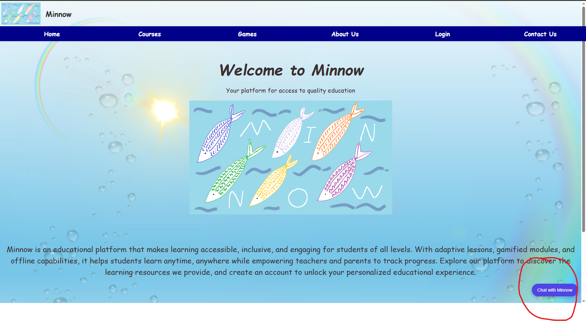
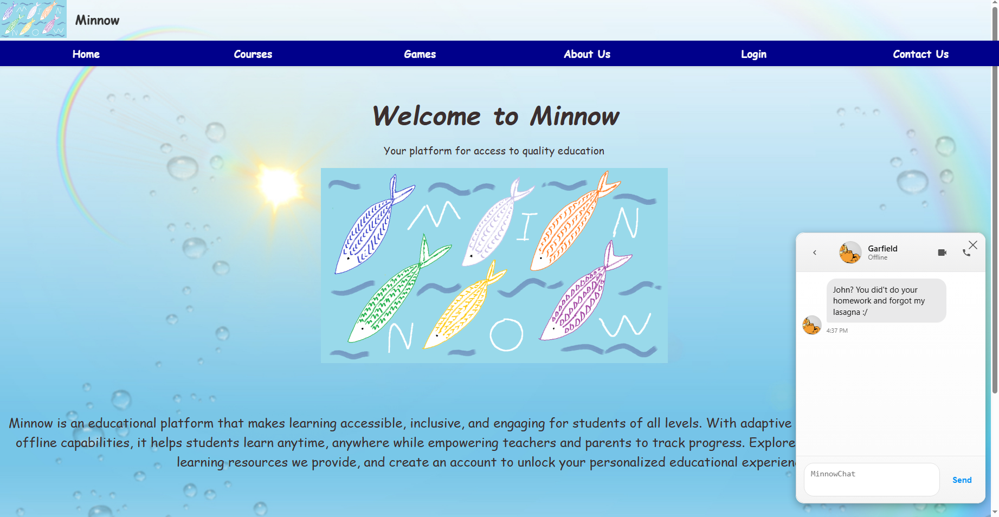
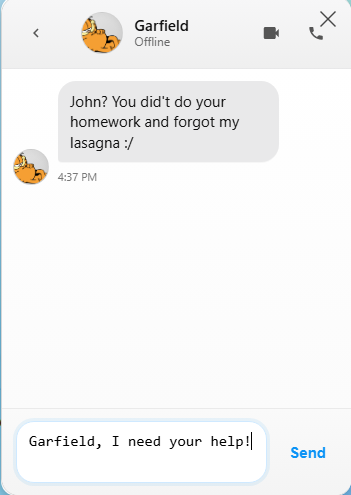
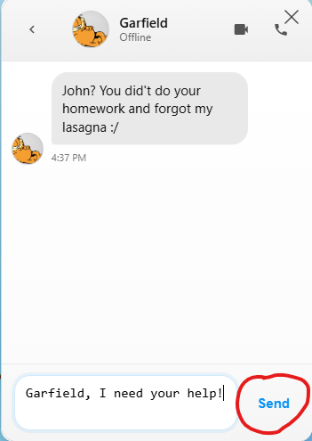
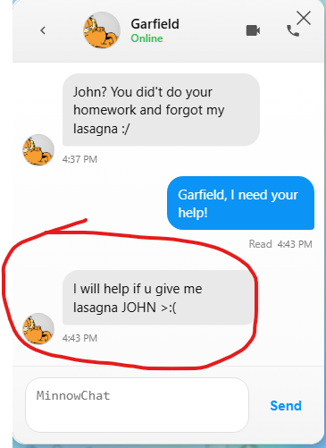

Authors: Lee Klaus

Figure 1: Our landing page, here you can find all sorts of buttons to navigate to different pages of the Minnow site. To access the
MinnowChat, however, we don't need to navigate away from this page! As circled in red,
in the bottom right of the Landing Page you will find a round blue
button with the text 'Chat with Minnow' on it in plain white text.
To open the MinnowChat:

Figure 2: MinnowChat will now be visible
in the bottom right of your screen, right where the blue button was seen in the previous step.
As seen in figure 2, MinnowChat should display as a white rectangle with several icons along the top of the rectangle
as well as the name of who you are chatting with and their user avatar image.
Below the top of the rectangle you will see a text bubble labeled with a timestamp of when it was sent.
Inside the text bubble you will find your chatting partner's message and to the left of their message you will find their
user avatar displayed here as well. At the bottom of the rectangle you will find another smaller rectangle that
says "MinnowChat" in grey text with a white button to the right of it labeled "Send" in light blue text.

Figure 3:Now that we have MinnowChat up and ready,
we can begin messaging! As pictured in figure 4, there is a small rectangle at the bottom of MinnowChat,
this is where we will be writing our message.
To write your message:

Figure 4: Your message is perfectly crafted and ready to send!
In figure 4 can see the "Send" button circled in red.
To send your message:

Figure 5: Your message will now show up as a blue bubble with white text in area above
the text box you typed your message in. You can also see in the above screenshot that there is message status information below the blue bubble.
When the message is first sent it will be labled as "Delivered" and when your messaging partner sees your message,
it will update to "Read" indicating that they read your message. Your message is also timestamped with the time you
sent it which can be seen to the right of the message status. When your chatting partner begins to reply and is typing
you will see three bubbles appear on the left side of the screen where their message bubbles appear. Once they finish and send their message
you will see it like the initial messaged from you messaging partner
when we first opened the chat with a timestamp below the message bubble.